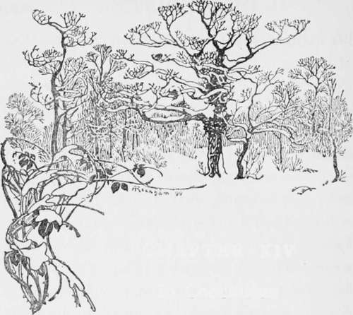

Otter-Hunting. Continued
Description
This section is from the book "Hunting: A Manual of Fox, Hare, Stag & Otter Hunting", by J. Otho Paget. Also available from Amazon: Hunting: A Manual of Fox, Hare, Stag & Otter Hunting.
Otter-Hunting. Continued
There are some packs that have been in existence for a great many years, and nothing is omitted that will conduce to the welfare of the hounds ; but there are other packs that change their masters at frequent intervals, and the management of these generally leave something to be desired. The money for this sport does not flow into the hunt's coffers quite as readily as in fox-hunting, and unless the master is a rich man he will have to economise to meet the bill for meal during a long winter of idleness. When possible, the hunt should always turn out well, but I should infinitely prefer to see a ragged huntsman to a ragged hound. Being always in the water, it is not easy to keep a gloss on their coats, but there is no reason they should not look muscular and healthy.
In the olden days the otter was hunted with hounds, but then it was not left entirely to the pack to kill him, and several of the party carried sharp spears with which they tried to impale him at every opportunity. We should consider this nowadays hardly a fair way of playing the game, but I imagine otters were more numerous then and a kill was a matter for rejoicing. At any rate it was a more sportsmanlike way of killing him than shooting or trapping, and it seems to me it would not be a very easy matter to spear an otter in the water. Before the advent of railways, which bring the spoils from the sea freshly caught to the most inland home, the coarse fish as well as the trout of our brooks and rivers were a very important item in the daily bill of fare. Hence it is not surprising that a gentleman like the otter, who helped himself to the choicest specimens in the water, should be looked upon as a common thief. I do not think, however, he does quite as much damage as some people would have us believe, and a stream must indeed be badly stocked that cannot spare an occasional fish. I believe he is particularly fond of an eel, and in that case he deserves the thanks of the fish-preserver, as there is no greater enemy to either fry or spawn. Whatever his delinquencies may be, I think the otter should be considered sacred on the streams where he is hunted with hounds, and those in authority should give orders to the keepers to spare his life.
The greatest objection I have to otter-hunting is that you have to get up at such a horribly early hour. I know some packs fix their meets as late as ten or eleven, but by doing this you miss the best part of the sport. An otter leaves a very strong scent, but when it is several hours old it must be considerably weakened, and therefore, the sooner you can get on it the better. You ought to be on the banks of the stream you intend to hunt soon after sunrise, and the warmer the weather the earlier you should start. I need hardly tell you that whenever possible you should work up-stream. Directly you hit a drag, you should send some one on ahead who knows the marks of an otter to find out which way he is travelling, or otherwise you may run the heelway for several miles before you discover your mistake. This running the drag, which will sometimes take you across meadows and over hills, is, as I have said, the best part of the sport. To my mind it is very poor fun drawing up a stream until you come to a holt where an otter is lying up, and after putting him down to surround him so that he has no chance of escape. Unless your hounds are out of blood or you have already been hunting for several hours, the pack should be drawn off" whilst the work of eviction is going on ; and though it is perfectly fair to stop him going down-stream, you should give him every opportunity of going up, and also give him a fair start before laying hounds on.
On streams that otters frequent, but which have few holts to tempt them to stop, it is a good plan to make artificial drains. The drain should slope upward from the river and the den should be well above high-water mark, so that an otter can be certain of lying dry. I do not know what is considered the best plan for a drain of this description, but I should think the horse-shoe shape with one entrance above water and one below. These drains should only be built where they are safe from disturbance either by stray dogs or too inquisitive human beings. The otter is shy of being seen, and it is very seldom an old dog will venture abroad in daylight, though a bitch suckling cubs does sometimes run this risk. The taint of hounds on a stream is sufficient to drive him elsewhere for a fortnight, and if he finds the fishing good in his new quarters he is more than likely to remain there for the rest of the season.
This sport, I think, offers more opportunities for a display of craft and resource than any other form of hunting. In every chase the first rule is to acquire a knowledge of the habits of the animal you hunt, and the more obscure the ways of the creature, the greater the interest in finding them out. Very little is known of the otter, and I do not think any one has even yet fixed the time they go with young. Like all other animals, the spring is the natural breeding season, but I believe cubs have been found at all periods of the year. I do not know whether it has ever been tried to breed them in captivity, but I see no reason why it should not be successful.
No man should attempt to hunt otter-hounds who is not blessed with a good constitution, for being continually in the water will try him very severely, and though he may expect warm weather in the summer, there will often be days when an east wind will make it as cold as winter. The huntsman and whips should always arrange to have a change of clothes somewhere handy when any distance from home. Youth is generally careless about these details, but it generally has to pay for it in the end, and to be laid on the shelf with rheumatic fever in the prime of life is annoying to a sportsman with his love of exercise.
In deep rivers and sluggish streams the otter can laugh at his enemies the hounds, as unless there are frequent shallows they have no chance of catching him. These places, I think, keep the smaller brooks stocked, and will prevent the otter from ever becoming extinct. He has, however, rather a fancy for the shallow streams, where he finds it easier to surprise the fish than in deep water. Though he catches many other sorts of fish, I think he prefers a trout, and when they retreat up small brooks to spawn he generally follows them. Therefore, if you wish to encourage otters on a river, stock well with trout.

Continue to: